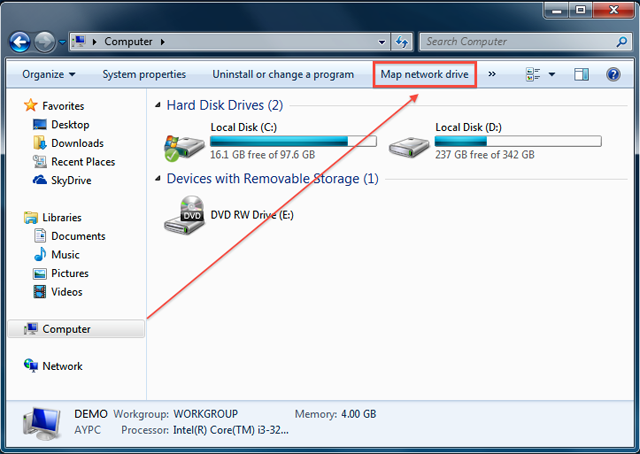

Přehled
Server Synology NAS je určen k rychlému a jednoduchému ukládání a sdílení souborů v rámci vaší lokální sítě, přičemž vám umožní přímý přístup ke sdíleným složkám uloženým na Synology NAS, aniž byste se museli pokaždé obtěžovat s přihlašováním do DSM. Budete například moci ukládat soubory na server Synology NAS pomocí aplikace Průzkumník Windows stejně jako ostatní síťová zařízení.
Mapování pomocí aplikace Průzkumník Windows
- Otevřete aplikaci Průzkumník Windows a přejděte na možnost Počítač.
- Klepněte na možnost Namapovat síťovou jednotku. Díky této akci se objeví okno Namapovat síťovou jednotku. 
- V okně Namapovat síťovou jednotku vyberte z rozevírací nabídky Jednotka písmeno dané jednotky.
- V poli Složka zadejte název serveru vašeho Synology NAS a název sdílené složky, přičemž před tento název zadejte obrácené lomítko a použijte ho také jako oddělovač. Například pokud je název serveru vašeho Synology NAS „DiskStation“ a název sdílené složky je „Share1“, pak zapište „\\DiskStation\Share1“. Až budete hotoví, klepněte na možnost Dokončit.
- Zadejte uživatelské jméno DSM a heslo.
- Nakonec se objeví okno aplikace Průzkumník Windows. Vaše sdílená složka nyní bude namapována a přístupná pod možností Počítač.


Nemůžete do sdílené složky získat přístup? Vámi zadaný uživatelský účet musí mít přístupová práva pro sdílenou složku, do níž chcete získat přístup.